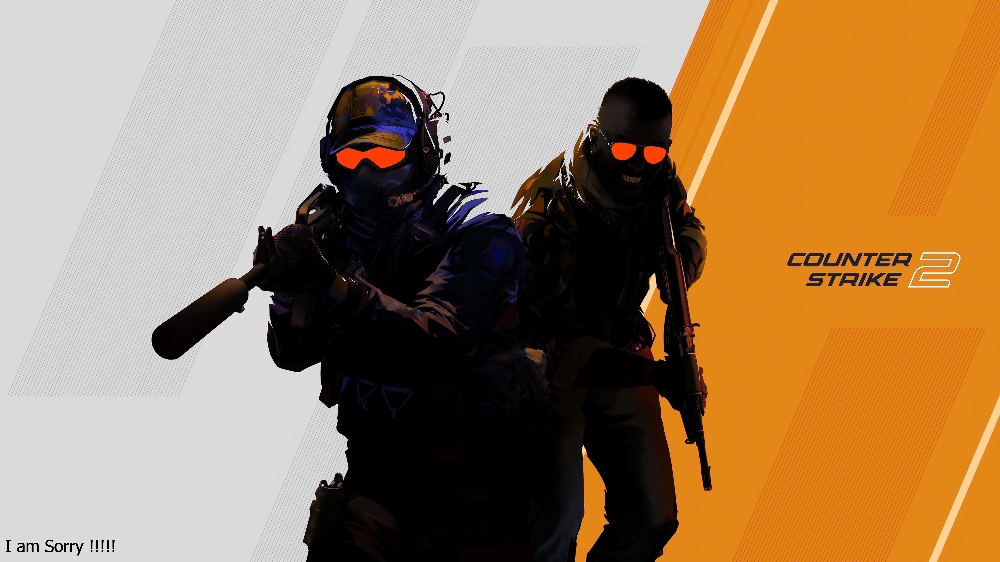

5 เกมยิงปืน FPS สนุก ๆ เล่นเพลิน ในปี 2024 บน PC
หากพูดถึงเกม หลาย ๆ คนคงรู้จักเกมยิงปืนหรือที่เราเรียกกันว่าเกมแนว FPS นั้นเอง แต่ทว่าหลาย ๆ คนคงยังไม่ทราบว่า ในสมัยนี้มีเกมแนวยิงปืนเกิดขึ้นมามากมาย และยังมีเกมแนวอื่นที่คล้าย FPS ด้วยเหมือนกัน ไม่ว่าจะเป็น แนว Battle Royale แนว Survivor เป็นต้น เกมแนวจำพวกนี้ถือเป็นเกมที่เข้าใจง่าย ไม่ยุ่งยาก เป็นเกมที่ได้รับความนิยมมาตลอดกาล และในวันนี้ทางเราจะขอมาแนะนำเกมยิงปืน ที่มาแรง จะมีเกมอะไรบ้าง ถ้าพร้อมแล้วเราไปดูรายละเอียดกันเลย
1.Valorant
Valorant เป็นเกมยิงปืน ที่ถูกพูดถึงกันมากในช่วงนี้ หลาย ๆ คนคงคุ้นหน้าคุ้นตากันอยู่แล้ว ภายในตัวเกมนี้ จะเป็นแนวการยิงปืนที่ไม่เหมือนใคร ไม่ซ้ำใครแน่นอน ด้วยตัวละครในเกมหรือสกิลปืนต่าง ๆ ที่มีกราฟิกภาพที่ดูโดดเด่น และยังมีจุดเด่นแปลกใหม่ที่ความสามารถพิเศษของตัวละครแต่ละตัว จึงทำให้เกมสนุกขึ้นได้อีกด้วย และเกมนี้ยังถูกได้รับการสนใจจากทั่วโลก จึงมีการจัดการแข่งขัน Valorant Champions ในหลายปีที่ผ่านมาอีกด้วย
2.Counter Strike2

หากคุณเป็นแฟนพันธ์แท้เกม Counter Strike:Global Offensive แล้ว คุณจะพลาดเกมอย่าง Counter Strike2 ไปไม่ได้เลย มีการเพิ่มเกมเพลย์ใหม่อย่างมากหลากหลายและระบบ การตอบสนองต่อแสงที่ดีขึ้น
3.Overwatch
Overwatch อีกหนึ่งเกมที่หลาย ๆ คนรู้จัก โดยเป็นเกมที่มีเอกลักษณ์ที่ โดดเด่น คือการเล่นแบบมีฮีโร่และฮีโร่ในเกมแต่ละตัว ยังมีความ สามารถพิเศษที่แตกต่างกันไป ตัวเกมถูกวางจำหน่ายเมื่อปี 2016 แต่ ในปัจจุบัน ทางผู้สร้าง Blizzard Entertainment ได้เปิดให้เล่นฟรี และทางผู้พัฒนาเกม พึ่งได้เปิดตัว Overwatch 2 ไปเมื่อปลายปี2022 ที่ผ่านมานี่เอง โดยมีการปรับ การเล่นแบบ 5v5 ปรับความสมดุลขอเกมให้น่าเล่น มากขึ้นกว่าเดิมแถมเพิ่มตัวละครใหม่ เป็นอีกหนึ่งเกมยิงปืนที่อยากแนะนำจริง ๆ
4.CALL OF DUTY :BLACKOP
คอลล์ออฟดิวตี: แบล็กออฟส์ โคลด์วอร์ (อังกฤษ: Call of Duty: Black Ops Cold War) เป็นวิดีโอเกมยิงมุมมองบุคคลที่หนึ่งที่พัฒนาโดย Treyarch และ Raven Software และจัดจำหน่ายโดยแอ็กทิวิชัน เป็นวิดีโอเกมที่ 6 ในซีรีส์ แบล็กออฟส์ และเป็นวิดีโอเกมที่ 17 ในซีรีส์ คอลล์ออฟดิวตี โดยทำหน้าที่เป็นภาคต่อโดยตรงของเกม คอลล์ออฟดิวตี: แบล็กออฟส์ (2010) ตัวเกมวางจำหน่ายในวันที่ 13 พฤศจิกายน 2020
5.Apex Legends
Apex Legends เกมยิงปืนแนว Battle Royale ตัวเกมมีจุดเด่นของตัวเองอย่างชัดเจน และมีรูปแบบการเล่นที่โดดเด่นแปลกใหม่ไม่เหมือนใคร เนื่องด้วยเกมนี้ ผู้เล่นจะมีตัวละครให้เลือกถึง 14 ตัว แต่ละตัวความสามารถยังแตกต่าง กันออกไปอีก เพื่อเข้าไปสู้กับทีมฝ่ายตรงข้าม สกิลความสามารถติดตัวของแต่ตัวละคร จะมีการแบ่งแยกกันอย่างชัดเจน จึงทำให้เกมนี้ได้เป็นที่นิยม และมีการตอบรับที่ดีด้วยผู้เล่นถึง 25 ล้านคน ซึ่งแน่นอนว่าสตรีมเมอร์ไม่ว่าจะในไทยหรือต่างประเทศมักให้ความสนใจกับเกมนี้